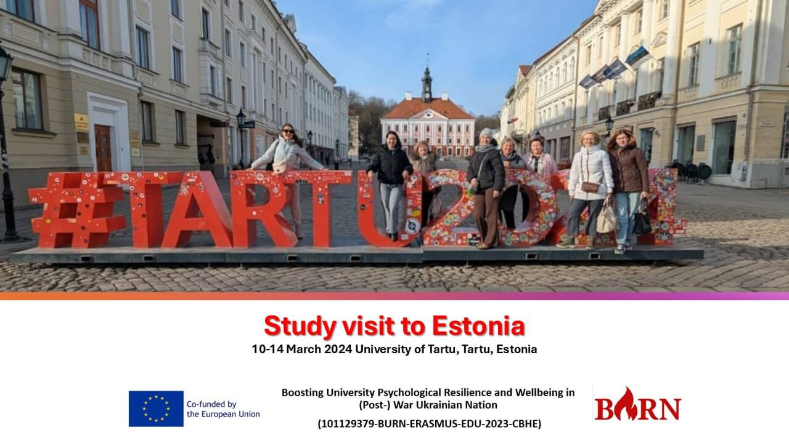

Boosting Psychological Resilience and Wellbeing in (Post-)War Ukraine: Study Visit to Estonia (Tartu, March 10-14, 2025)
From March 10-14, 2024, a delegation of psychologists from five Ukrainian universities and three EU universities (TU, IPU, UL) will participate in a study visit to Estonia as part of the BURN (Boosting University Psychological Resilience and Wellbeing in (Post-)War Ukraine) project. Hosted by the University of Tartu, this visit aims to strengthen psychological support services in Ukrainian higher education institutions by deepening expertise in trauma therapy and art therapy.
Key Focus Areas:
- Understanding trauma-informed psychological support
- Exploring best practices in university counseling services
- Advancing professional development for psychologists
- Strengthening collaboration between counseling centers and academic institutions
Participants will engage with the University of Tartu’s Counselling Center and Institute of Psychology, gaining valuable insights into mental health support frameworks, research, and innovative therapy approaches. Sessions will cover topics such as historical perspectives on psychology education, cutting-edge research, and the role of digital tools in psychological services.
The study visit will provide hands-on learning, knowledge exchange, and skill-building, equipping participants with tools to enhance psychological resilience in their institutions. All attendees will receive certificates upon completion.
Venues: University of Tartu (Tartu & Tallinn)
Target group: Practicing psychologists working in Ukrainian universities
This initiative is a vital step in addressing the psychological impact of war on students and academic staff, ensuring that universities remain resilient spaces for learning, growth, and healing.